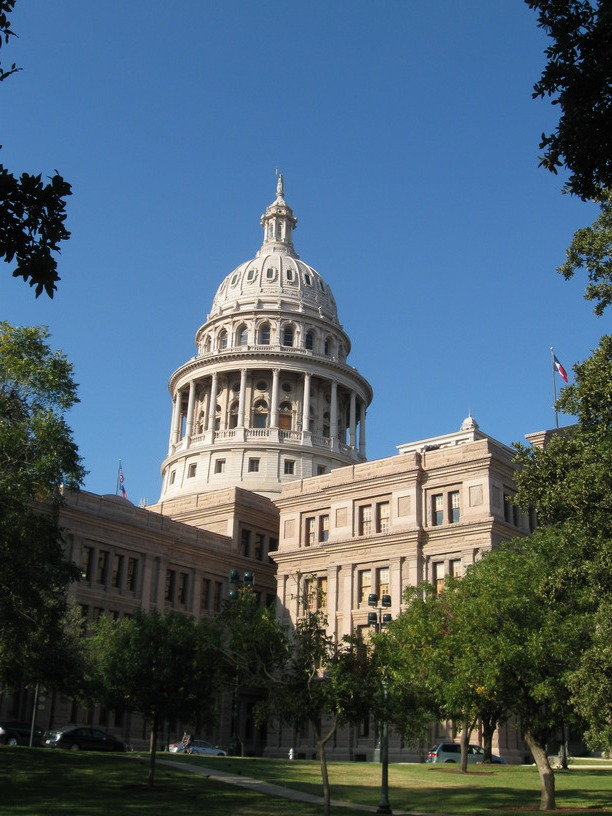
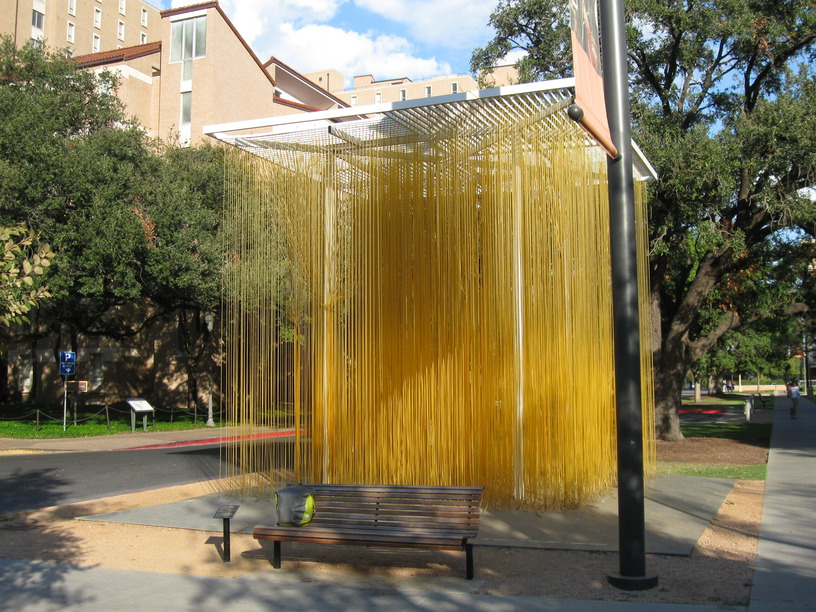
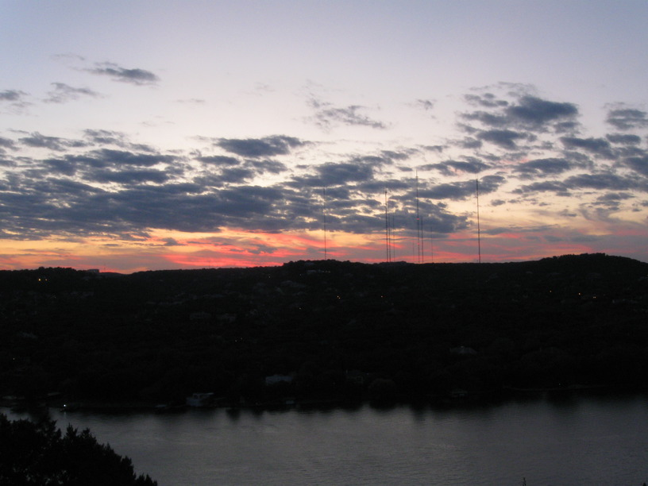

3 Nov 2008, Austin, TX
Rest day in Austin today. Of course, I still had to explore the city on my bike. It's like a smaller version of Washington DC, but with a strong college feel because of UT. There are tons of cyclists too, so drivers are attentive to cyclists. One thing I noticed was that there is a strong blinky light culture among the cyclists, which I have to assume is related to the advocacy & education efforts in the city & at UT. More ideas for Baltimore . . .


